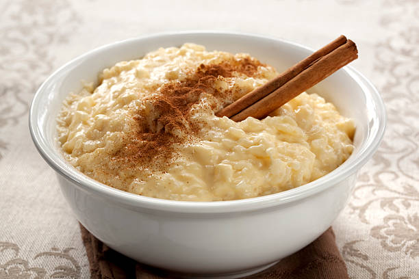

Arroz Doce

Descrição
Uma sobremesa tradicional portuguesa feita com arroz, leite e um toque de canela.
Ideal para terminar uma refeição com um sabor doce e reconfortante.
Ingredientes
- 1 chávena de arroz
- 4 chávenas de leite
- 1 chávena de açúcar
- Casca de limão
- Canela em pau e em pó
Passos
- Coze o arroz com um pouco de água e casca de limão.
- Adiciona o leite e deixa cozinhar lentamente.
- Quando estiver cremoso, junta o açúcar e mexe bem.
- Serve polvilhado com canela.
Voltar ao Início